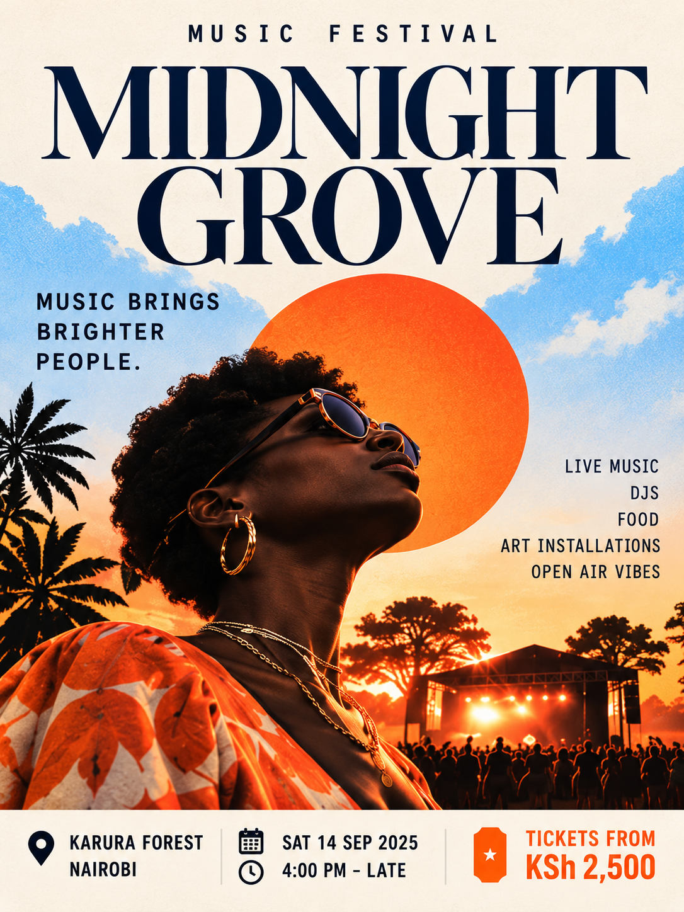

Poster study / 01Music / Open air
MIDNIGHT GROVE
A fictional open-air listening experience shaped around sunset, live performance and the feeling of finding your people after a long week.
- Who it is for
- Music lovers, friends and sunset chasers
- Typography direction
- Cormorant Garamond — chosen for elegant editorial contrast. The small supporting information uses Inter for readability.
- Visual idea
- An enormous editorial serif gives the gathering elegance; the warm sun, textured paper and horizon line make the atmosphere immediate.
- Personality
- Warm · Social · Cinematic